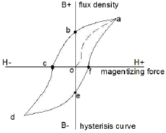
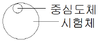

자기비파괴검사기사(구) (2013-08-18 기출문제)
1과목: 자기탐상시험원리
1. 자화 전원부와 자화기기 사이에 전류를 통전하는 자화케이블에 있어서 케이블의 단면적을 선택할 때 다음 중 고려하지 않아도 되는 것은?
- 자력방향
- 통전시간
- 통전빈도
- 자화전류의 크기
(정답률: 알수없음)

2. 그림에서 항자력(coercive force)의 크기를 나타내는 부분은?

- o-a
- o-b
- o-c
- b-e
(정답률: 알수없음)
3. 일반주철과 구상화 흑연주철을 용접한 용접부에 대한 자분탐상검사를 실시하였더니 두 금속과 용접부 경계에 선형지시가 발생하는 경우가 아닌 것은?
- 투자율이 다른 경우
- 금속조직이 다른 경우
- 융합불량이 나타나는 경우
- 표면 기공이 나타나는 경우
(정답률: 알수없음)
4. 다음 중 시험체를 영구자석의 두 극 사이에 놓아 자화시키는 시험법은?
- 통전법
- 관통법
- 극간법
- 프로드법
(정답률: 알수없음)
5. 물질이 자화되고 자화력을 제거한 후에도 어느 정도의 자화 상태를 나타내는 재료의 특성을 무엇이라 하는가?
- 투자성(permeability)
- 잔류자기(residual magnetism)
- 자구(magnetic domain)
- 보자성(retentivity)
(정답률: 알수없음)
6. 직경이 200mm이고 길이가 500mm인 강자성체 봉을 축통전법으로 1000A의 전류를 흐르게 할 때 시험체 표면에서 자계의 세기는 어느 정도인가?
- 400A/m
- 800A/m
- 1200A/m
- 1600A/m
(정답률: 알수없음)
7. 가시광선이나 x선 또는 γ선에 노출되면 훌륭한 전기도체가 되는 원리를 이용하여 셀레늄(selenium)판에 시험체의 상을 기록하여 건식현상 처리하는 방사선투과시험은?
- 자동(Auto) 방사선투과시험
- 제로(Xero) 방사선투과시험
- 입체(Stereo) 방사선투과시험
- 실시간(Realtime) 방사선투과시험
(정답률: 알수없음)
8. 자분탐상시험은 자분모양에 의해 불연속을 검출하므로 자분모양의 식별성은 중요하다. 이 자분 모양의 식별성을 향상시키기 위하여 고려할 사항이 아닌 것은?
- 식별성은 백그라운드와의 대비에 의해 좌우되므로 형광자분을 사용할 때는 형광휘도가 낮은 것을 선택하여 사용해야 한다.
- 불연속부에 충분한 양의 자분이 흡착되도록 가능한 한 균일하게 자분을 적용해야 한다.
- 적정한 자화로 불연속부로부터 충분한 눈설작속이 얻어지도록 해야한다.
- 관찰하기 편리한 환경에서 눈과 시험면의 거리를 두고 바른 관찰을 해야한다.
(정답률: 알수없음)
9. 결함의 형상을 육안으로 판단할 수 있어 해석이 용이한 비파괴검사법만으로 조합된 것은?
- 방사선투과시험, 자분탐상검사
- 초음파탐상검사, 침투탐상검사
- 와전류탐상검사, 자분탐상검사
- 와전류탐상검사, 침투탐상검사
(정답률: 알수없음)
10. 누설에 사용되는 기본 단위 중 1atm 에 해당되지 않는 것은?
- 14.7psi
- 760torr
- 760mmH
- 1013kPa
(정답률: 알수없음)
11. 단조품의 내부결함 검출에 가장 적합한 비파괴검사법은?
- 자분탐상시험법
- 초음파탐상시험법
- 침투탐상시험법
- 와전류탐상시험법
(정답률: 알수없음)
12. 자연광에서 모든 색은 사람의 눈에 각기 밝기가 틀리게 보이는데 밝기(brightness)가 동일할 때 가장 쉽게 발견 될 수있는 색은?
- 빨간색
- 황록색
- 청색
- 자주색
(정답률: 알수없음)
13. 와전류탐상검사에서 가장 흔히 사용되는 전기 파형은?
- 구형파
- 삼각파
- 사인파
- 톱니파
(정답률: 알수없음)
14. 가열양극 할로겐법의 특징을 설명한 것 중 틀린 것은?
- 기름에 막혀있는 곳의 누설을 검출할 수 없다.
- 스니퍼 튜브 통과시간에 따라 응답시간이 길어질 수 있다.
- 인화성 재질이나 폭발성 대기근처에서 사용하면 위험하다.
- 할로겐 추적가스에 장시간 노출되면 누설신호가 사라질 수있다.
(정답률: 알수없음)
15. 납 용기나 철 케이스 내에 들어 있는 물질의 양을 검사하는 데 효과적인 비파괴검사법은?
- 누설검사
- 침투탐상시험
- 초음파탐상시험
- 중성자투과시험
(정답률: 알수없음)
16. 침투탐상검사의 특징을 설명한 것 중 옳은 것은?
- 자성 재료에만 적용할 수 있다.
- 표면이 열려 있지 않아도 결함 검출이 가능하다.
- 1회의 탐상조작으로 시험체 전체를 탐상할 수 있다.
- 표면이 거친 시험체나 다공성 재료의 결함 검출에 우수하다.
(정답률: 알수없음)
17. 다음 비파괴검사법 중 강판의 도금두께 측정에 적합한 것은?
- 방사선투과검사
- 초음파탐상검사
- 침투탐상검사
- 와전류탐상검사
(정답률: 알수없음)
18. 분말야금법에 의하여 제조된 다공성(porous) 재질의 표면 검사에 가장 적합한 비파괴검사법은?
- 자분탐상검사법
- 입자여과검사법
- 와전류탐상검사법
- 질량분석누설검사법
(정답률: 알수없음)
19. 다음 중 비파괴검사의 종류와 그 특성을 연결한 것으로 틀린 것은?
- 음향방출시험 - 동적 결함검사
- 와전류탐상시험 - 전도체의 표면검사
- 전자초음파공명법 - 고온재료의 접촉검사
- 핵자기공명 단층영상법- 수소원자핵의 분포를 영상화
(정답률: 알수없음)
20. 방사선투과검사로 얻을 수 있는 결함 정보 중 정밀도가 가장 높은 것은?
- 결함의 면적
- 결함의 깊이
- 결함의 길이
- 결함의 재적
(정답률: 알수없음)
2과목: 자기탐상검사
21. 위상이 120도씩 서로 다른 삼상교류의 각 상을 반파정류하여 자화전류로 만들어, 1회의 조작으로 방향이 서로 다른 자계가 동시에 시험체에 걸리도록 한 특수자분탐상 장치는?
- 회전자계에 의한 방식
- 듀오백법에 의한 방식
- 진동자계에 의한 방식
- 브릿지법에 의한 방식
(정답률: 알수없음)
22. 잔류법에 있어서 시험품이 서로 접촉한 경우 생기는 누설자속에 의해 형성되는 자분모양을 무엇이라 하는가?
- 자기 펜 자국
- 전류지시
- 자극지시
- 오염지시
(정답률: 알수없음)
23. 자분탐상 장치 성능 점검의 연결이 틀린 것은?
- 프로드식 장비 - 전류계
- 자외선등 - 자외선 파장계
- 극간식 장비 - Lifting Power Block
- 자분액의 농도 - 심전관(침전관)
(정답률: 알수없음)
24. 누설자속탐상시험에서 결함으로부터 누설하는 자속을 검출하는 센서에 요구되는 기능이 아닌 것은?
- 자기감도가 높을 것
- 전류 및 전압에 민감하게 작동할 수 있을 것
- 기계적으로 견고하고 온도 등 사용 환경의 영향이 적을 것.
- 검출하는 결함으로부터 누설자속을 충실히 검출할 수 있는 형상 및 치수를 가질 것
(정답률: 알수없음)
25. 형광자분탐상검사에 사용되는 자외선등에 대한 설명으로 틀린 것은?
- 고압수은등에 자외선 필터를 부착하여 사용한다.
- 사용되는 파장은 320mm~400mm 범위의 근자외선이다.
- 관찰에 필요한 자외선의 강도는 최소 800~1000㎼/cm2 이상이다.
- 사용되는 자외선의 강도는 필터 앞면으로부터 멀어질수록 거리의 제곱으로 증가한다.
(정답률: 알수없음)
26. 자분탐상검사에 교류 전류를 사용하는 경우의 설명으로 틀린 것은?
- 탈자시길 때는 사용하지 않는다.
- 자속의 침투깊이가 매우 깊다.
- 일반적으로 잔류법에는 적용하지 않는다.
- 표면 불연속의 검출에 비효율적이다.
(정답률: 알수없음)
27. 표면이 거칠고 표면아래의 결함 검출에 유리한 자분탐상검사방법은?
- 직류전류 및 건식자분을 이용한 방법
- 교류전류 및 건식자분을 이용한 방법
- 직류전류 및 습식자분을 이용한 방법
- 교류전류 및 습식자분을 이용한 방법
(정답률: 알수없음)
28. 자분의 특성으로서 옳지 못한 것은?
- 자분의 입도는 일반적으로 0.2~60㎛ 정도의 것이 상용된다.
- 비교적 큰 결함에는 큰 입도의 자분이 좋다.
- 일반적으로 자분의 겉보기 비중은 가벼울수록 좋다.
- 형광자분은 비형광자분에 비해 콘트라스트는 떨어지나 미세결함 탐상에 유리하다.
(정답률: 알수없음)
29. 프로브를 사용하여 용접부위를 탐상할 때 사용전류는 어느것에 따라 결정하는가?
- 시험체의 길이
- 시험체의 모양
- 프로브간의 거리
- 시험체의 면적
(정답률: 알수없음)
30. 직경 50mm, 길이 150mm 인 봉을 코일법으로 자분탐상검사할 때 장비의 최대 전류가 3000A 라면 검사체에 몇 회의 코일을 감아야 하는가?
- 3회
- 4회
- 5회
- 6회
(정답률: 알수없음)
31. 6인치 간격의 프로드에 의해 자장이 유도될 때 이 자장의 모양은?
- 직선 자장
- 찌그러진 원형자장
- 솔레노이드 자장
- 사각 자장
(정답률: 알수없음)
32. 자분탐상시험에서 원형자계를 적용할 경우 장점이 아닌 것은?
- 극히 필요하지 않다.
- 강한 자장이 가능하다.
- 조작이 일반적으로 간다하다.
- 시험편을 접촉시키지 않아도 된다.
(정답률: 알수없음)
33. 석유탱크와 같은 대형 시험체의 용접부에 대한 자분탐상검사는 어떤 방법이 가장 적합한가?
- 코일법
- 전류관통법
- 극간법
- 자속관통법
(정답률: 알수없음)
34. 자화방법의 종류를 선택할 때 원칙적으로 고려해야 할 사항이 아닌 것은?
- 자계가 탐상면에 골고루 분포되도록 한다.
- 반자계가 형성되지 않도록 한다.
- 자화전류는 시험체에 분포되는 자계를 포화값까지 높이 걸어 준다.
- 자속이 흐르는 방향에 대하여 결함은 수직에 가깝게 배치한다.
(정답률: 알수없음)
35. 축통전법으로 직경 50mm, 길이 60cm인 환봉을 검사하려 할 때 일반적으로 요구되는 시험 전류값은?
- 300 암페어
- 1000 암페어
- 1700 암페어
- 2400 암페어
(정답률: 알수없음)
36. 자분이 구비하여야 할 일반적 조건으로 틀린 것은?
- 정교하고 미세한 분말이어야 한다.
- 높은 투자율을 가져야 한다.
- 높은 보자성을 가져야 한다.
- 흡착 성능이 좋아야 한다.
(정답률: 알수없음)
37. 두꺼운 후판을 탐상하기 위한 자화방법만의 조합으로 옳은 것은?
- 극간법 - 축통전법
- 프로드법 - 직각통전법
- 극간법 - 프로드법
- 프로드법 - 전류관통법
(정답률: 알수없음)
38. 자분탐상검사시 시험체 전면에 자분모양이 나타났을 때의 1차적인 조치로 가장 옳은 것은?
- 시험체를 폐기한다.
- 반대 방향으로 재검사한다.
- 전류량을 낮춰서 재검사한다.
- 전류량을 높여서 재검사한다.
(정답률: 알수없음)
39. 자분탐상시험을 할 때 A형 표준시험편을 이용하는 경우가 아닌 것은?
- 모양이 단순하고 긴 용접루를 검사할 때
- 자장의 강도 또는 방향을 확인할 때
- 장치, 자분 및 검사액의 성능을 확인할 때
- 시험조작의 적부를 판단하고자 할 때
(정답률: 알수없음)
40. 직류로 자분탐상한 선형지시가 표면에 존재하는 것인지 표면 아래 쪽에 존재하는지를 확인하기 위한 방법이 아닌 것은?
- 시험물을 탈자하고 자분을 다시 뿌려 나타나는 현상을 확인한다.
- 시험물 표면의 자분을 제거하고 표면 결함 유무를 정밀하게 관찰한다.
- 시험물을 탈자하고 교류로 다시 검사한다.
- 침투탐상을 실시해 본다.
(정답률: 알수없음)
3과목: 자기탐상관련규격및컴퓨터활용
41. 철강 재료의 자붙남상 시험방법 및 자분모양의 분류(KS D0213)에 의거 선상의 자분모양을 설명한 것은?
- 원형상의 자분모양 이외의 것
- 자분모양의 서로의 거리가 2mm이하인 것
- 균열로 식별된 자분모양
- 자분모양에서 그 길이가 나비의 3배 이상인 것
(정답률: 알수없음)
42. 철강 재료의 자분탐상 시험방법 및 자분모양의 분류(KS D0213)에서 탈자에 관한 내용의 설명 중 잘못된 것은?
- 시험체의 잔류자기가 계측 장비에 영향을 줄 때
- 탈자는 자계의 방향을 교대로 바꾸면서 자계의 강도를 감소시킨다.
- 탈자의 방법에는 직류나 교류에 의한 자게를 이용하는 방법이 있다.
- 탈자시 잔류자기 값을 정확하게 층정하기 위해서 가우스미터만 사용한다.
(정답률: 알수없음)
43. 보일러 및 압력용기에 대한 자붙남상검사(ASME Sec. VArt.7)의 규정에 따라 외경 1인치인 검사체를 전류관통법에 의한 자화시 필요한 자화전류는 몇 A 인가?
- 약 90~110
- 약 300~800
- 약 1000~1600
- 약 2000~3200
(정답률: 알수없음)
44. 보일러 및 압력용기에 대한 자분탐상검사(ASME Sec. VArt.7)에 따라 자분탐상 시험할 때의 기준으로 틀린 것은?
- 교류요크의 견인력은 최소 4.5kg이다.
- 직류요크의 견인력은 최대 극간에서 최소 13.5kg이다.
- 전류계는 최소한 1년 한번 교정한다.
- 비형광자분의 시험면 밝기는 최소 1000룩스이다.
(정답률: 알수없음)
45. 보일러 및 압력용기에 대한 자분탐상검사(ASME Sec. VArt.7)에서 시험체 두께 1인치, 프로드 간격 6인치, 전류 650[A]를 사용하여 검사한 경우와 프로드 간격만 12인치로 변경하였을 때 탐상 결과를 옳게 설명한 것은?
- 두 가지 모두 선명도가 동일한 결과를 얻는다.
- 6인치의 경우가 자분지시가 더 선명하다.
- 선명도에는 두 가지 모두 영향이 없다.
- 12인치의 경우가 자분지시가 더 선명하다.
(정답률: 알수없음)
46. 보일러 및 압력용기에 대한 자분탐상검사의 합격기준(ASME Sec. Vlll Div. 1 App.6)의 규정을 맞게 설명한 것은? (단, L은 결함길이, W는 너비 이다.) (문제 오류(정답지 오류)로 정답이 없습니다. 여기서는 1번을 누르면 정답 처리됩니다. 정확한 정답을 아시는분께서는 오류신고를 통하여 정답 작성 부탁 드립니다.)
- L ＞ ２W
- L ＜ 2W
- L ＞ 3W
- L ＜ 3W
(정답률: 알수없음)
47. 철강 재료의 자분탐상 시험방법 및 자분모양의 분류(KS D0213)에 따라 자화할 때, 유효자의 방향 및 강도의 확인 보다는 자분액 등의 성능을 조사하는데 주로 사용되는 것은?
- A형 표준시험편
- B형 대비시험편
- C형 표준시험편
- 가우스 미터
(정답률: 알수없음)
48. 철강 재료의 자분탐상 시험방법 및 자분모양의 분류(KS D0213)에서 자분탐상 시험 장치는 원칙적으로 시험체에 대하여 4가지 조작을 할 수 있어야 한다. 이 4가지 조작에 관한 항목이 옳게 나열된 것은?
- 자화-자분적용- 탈자-후처리
- 전처리-탈자-자화-자분적용
- 자화-자분적용-관찰-탈자
- 전처리-탈자-자분적용-후처리
(정답률: 알수없음)
49. 보일러 및 압력용기에대한 자분탐상검사 (ASME Sec.V Art,7)에서 암실에서 형광자분을 적용하여 검사하고자 할때 눈이 어둠에 적응할 수 있도록 하는 최소 시간은?
- 1분
- 5분
- 10분
- 15분
(정답률: 알수없음)
50. 철강 재료의 자분탐상 시험방법 및 자분모양의 분류(KS D0213)에 따른 자분모양의 관찰에서 형광자분을 사용할 경우 시험체 관찰면에서 최소 자외선강도는?
- 700㎼/cm2
- 800㎼/cm2
- 900㎼/cm2
- 1000㎼/cm2
(정답률: 알수없음)
51. 보일러 및 압력용기에 대한 자분탐상검사(ASME Sec.V Art,7)에서 파이형 자장지시계의 용도를 가장 정확하게 설명한 것은?
- 전류치 측정
- 경함위치 측정
- 결함의 깊이 측정
- 자계 방향의 적합성 측정
(정답률: 알수없음)
52. 보일러 및 압력용기에 대한 자분탐상검사(ASME Sec.V Art,7)에 따라 전류관통법을 사용한 탐상에서 단일 중심전도체를 사용하는 경우 시험체를 검사하기 위해 3000A의 전류가 필요하였다. 만일 3개의 관통 토일을 사용할 경우 얼마의 전류(A)가 필요하겠는가?
- 750
- 1000
- 3000
- 6000
(정답률: 알수없음)
53. 철강 재료의 자분탐상 시험방법 및 자분모양의 분류(KS D0213)에서 자분모양을 관찰할 때에 투자율이 다른 재질또는 금속조직의 경계에 생기는 누설자속에 의해 형성되는 자분모양의 원인으로 틀린 것은?
- 용접부의 용접금속과 모재의 경계
- 열처리 경계
- 냉간 가공의 표명가공도가 다른 부분
- 단면적이 급변하는 곳의 용입부족
(정답률: 알수없음)
54. 철강 재료의 자분탐상 시험방법 및 자분모양의 분류(KS D0213)에 따라 잔류법으로 시험하는 경우 자분의 적용전에 다른 강자성체를 시험면에 접촉시켜서는 안되는 이유는?
- 자극지시가 생기기 때문이다.
- 전극지시가 생기기 때문이다.
- 자기펜 자국이 생기기 때문이다.
- 재질경계 지시가 생기기 때문이다.
(정답률: 알수없음)
55. 보일러 및 압력용기에 대한 표준자분탐상검사(ASME Sec.V Art,25 SE-709)에 따라 그림과 같이 속이 빈 강자성체를 중심도체를 사용하여 자화할 때, 1회 자화로 유효하게 자화할 수 있는 시험체 원주상의 길이는 중심도체 직경의 얼마로 하는가?

- 약2배
- 약4배
- 약6배
- 약8배
(정답률: 알수없음)
56. 철강 재료의 자분탐상 시험방법 및 자분모양의 분류(KS D0213)에 탐상결과 얻은 자분모양을 모양 및 집중성에 따라 분류한 것이 아닌 것은?
- 연속한 자분모양
- 독립한 자분모양
- 균열에 의한 자분모양
- 군집한 자분모양
(정답률: 알수없음)
57. 보일러 및 압력용기에 대한 자분탐상검사(ASME Sec . V Art. 7)에 따라 지름이 50mm이고 길이가 250mm인 환봉을 코일법으로 선형자화 할 때에 주어지는 자계의 강도(AT)는?
- 500
- 1000
- 5000
- 9000
(정답률: 알수없음)
58. 보일러 및 압력용기에 대한 표준자분탐상검사(ASME Sec.V Art.25 SE-709)의 건식자분용 링시험편에서 전파정류전류(FWDC)가 1004A 일 때 시스템의 서능 확인을 위해 나타나야 할 최소 구멍수는?
- 3
- 4
- 5
- 6
(정답률: 알수없음)
59. 철강 재료의 자분탐상 시험방법 및 자분모양의 분류(KS D 0213)에서 연속한 자분모양은 결함들 각각의 사이 거리가 몇 mm 이하일 때를 말하는가?
- 1mm이하
- 2mm이하
- 3mm이하
- 4mm이하
(정답률: 알수없음)
60. 철강 재료의 자분탐상 시험방법 및 자분모양의 분류(KS D 0213)에서 기호 중 B가 의미하는 자화방법은?
- 축통전법
- 직각통전법
- 전류관통법
- 자속관통법
(정답률: 알수없음)
4과목: 금속재료학
61. 형상기억합금의 조성 성분으로 옳은 것은?
- Mn-B
- Co-W
- Cr-Co
- Ti-Ni
(정답률: 알수없음)
62. 니켈의 비중과 용융점(℃)은 약 얼마인가?
- 비중 : 2.7, 용융점 : 670℃
- 비중 : 4.5, 용융점 : 780℃
- 비중 : 6.9, 용융점 : 1020℃
- 비중 : 8.9, 용융점 : 1455℃
(정답률: 알수없음)
63. 수인법(water-toughening)은 어느 강에 이용되는가?
- 탄소강
- 자석강
- 고속도강
- 스테인리스강
(정답률: 알수없음)
64. 상온에서 초석페라이트(α) 양이 75%이고 펄라이트 양이 25%인 탄소강의 탄소함량은 약 얼마인가? (단, 공석정의 탄소함량은 0.8% 이다.)
- 0.20%
- 0.25%
- 0.30%
- 0.35%
(정답률: 알수없음)
65. 금속을 원자로용, 고융점 구조재료, 반도체, 알칼리토류 군(群)으로 분류할 때 반도체군에 해당되는 것은?
- W, Re
- Na, Li
- Ge, Si
- U , Th
(정답률: 알수없음)
66. 아연이 대기 중에서 산화되어 얇은 막을 형성하였다.이러한 얇은 막에 대한 설명으로 틀린 것은?
- 막은 금속과 대기를 차단한다.
- 막은 공기 중의 습기를 차단한다.
- 막은 내부 부식을 방지한다.
- 막을 통해 점점 부식되어진다.
(정답률: 알수없음)
67. 알루미늄 합금의 질별 기본 기호 중 “제조한 그대로의 것”을 나타내는 기호로 옳은 것은?
- O
- T
- F
- W
(정답률: 알수없음)
68. 알루미늄 합금에서 개량처리(modification)의 효과가 가장 기대되는 합금계(실루민)는?
- Al - Co계
- Al - Si계
- Al - Sn계
- Al - Zn계
(정답률: 알수없음)
69. 탄소강 중에 포함되어 있는 인(P)의 영향을 설명한 것 중 틀린 것은?
- 강중의 P는 철의 일부분과 결합하여 Fe3P 화합물을 만들어 입계에 편석하기 쉽다.
- P는 탄소강의 경도, 인장 강도를 감소시키며 고온취성을 일으켜 파괴의 원인이 된다.
- P로 인한 해는 강중의 탄소량이 많을수록 크며 공구강에서는 일반적으로 0.025% 이하가 혀용된다.
- 상온에서의 충격치를 저하시키는 상온 취성의 원인이 된다.
(정답률: 알수없음)
70. 탄소강의 용도의 관한 설명 중 틀린 것은?
- 흑강판은 주로 도금철판으로 쓰인다.
- 마강판은 딥드로잉이 불가능하다.
- 실용되는 탄소강은 일반적으로 0.⑤~1.7%이다.
- 구조강으로는 평로강 및 전로 제강의 의한 림드강이 많이 쓰인다.
(정답률: 알수없음)
71. 철강재료의 내마모성을 향상시키기 위한 방안으로 옳은 것은?
- 탄소의 함량을 낮게 한다.
- 담금질 후 고온 뜨임을 한다.
- 표면에 Cr, B 등을 침투시킨다.
- 마모를 작게 하는 데에는 윤활제를 사용하지 않는다.
(정답률: 알수없음)
72. 분산강화와 석출강화에 대한 설명으로 틀린 것은?
- Cu-Be 합금은 분산강화형 합금으로 시효처리에 의해 석출물이 형성되어 재료의 강도를 증가시킨다.
- 석출경화용 합금은 온도가 올라가면 석출물을 성장하고 기지 내로 재용해되기 때문에 강화 효과가 줄어들거나 없어진다.
- 분산강화는 미세하게 분산된 불용성 제 2상에 의해 재료를 강화시키는 방법으로 고온에서도 상당한 강도를 유지할 수 있다
- 분상강화와 석출강화에서 재료의 강도가 증가하는 이유는 분산상이나 석출상이 전위의 이동을 방해하는 장애물로 작용하기 때문이다.
(정답률: 알수없음)
73. 컵 앤 콘(Cup and Cone) 현상은 어떠한 파괴 과정을 말하는가?
- 크리프파괴
- 피로파괴
- 연성파괴
- 취성파괴
(정답률: 알수없음)
74. 고장력강을 만들기 위한 야금학적인 요인이 아닌 것은?
- 제어압연에 의한 강인화
- 미량 합금원소의 첨가에 의한 석출 경화
- 합금원소의 첨가에 의한 연강의 고용 강화
- 미량 원서의 첨가에 의한 결정립의 조대화
(정답률: 알수없음)
75. 0.9~1.4%C 10~15%Mn을 함유한 것으로 인성이 높고 내마멸성이 큰 강으로 암석 파쇄기 등에 사용되는 강은?
- 다이스강
- 해드 필드강
- 화이트 메탈
- 고속도 공구강
(정답률: 알수없음)
76. 주철에서 강도 및 연성의 성질을 고려할 때, 가장 이상적인 흑연의 형상은?
- 편상
- 괴상
- 구상
- 선상
(정답률: 알수없음)
77. 침탄 후 시행하는 열처리로서 1차 담금질의 목적은?
- 침탄층의 경화
- 중심부의 연화
- 침탄층의 조직 미세화
- 중심부 조직의 미세화
(정답률: 알수없음)
78. 강의 경화능을 향상시키는 효과가 큰 순서로 나열한 것은?
- B ＞ MN ＞ Mo ＞ P
- B ＞ P ＞ Mn ＞ mo
- P ＞ Mn ＞ Mo ＞ B
- P ＞ Mn ＞ B ＞ Mo
(정답률: 알수없음)
79. 로우 엑스 (Lo-Ex)합금에 대하여 설명한 것 중 틀린 것은?
- 고온강도가 크다.
- 주로 단조 가공하여 사용한다.
- 내마모성이 좋다.
- 피스톤 재료로 사용한다.
(정답률: 알수없음)
80. Al-Cu 2원계 합금을 용체화 처리하여 얻은 Cu의 과포화 고용체의 시효에 수반되는 변화의 순서는?
- 과포화 고용체 → G.P [2] → G.P [1] → ⴱ → 고용체+ⴱ
- 과포화 고용체 → G.P [1] → G.P [2] → ⴱ -＞ 고용체+ⴱ → ⴱ
- 과포화 고용체 → G.P [1] → 고용체+ⴱ → G.P [2] → ⴱ
- 과포화 고용체 → G.P [1] → G.P [2] → ⴱ → 고용체+ⴱ
(정답률: 알수없음)
5과목: 용접일반
81. 땜납의 구비 조건이 아닌 것은?
- 모재보다 용융점이 높아야 한다.
- 표면장력이 적어 모재 표면에 잘 퍼져야 한다.
- 유동성이 좋아서 틈이 잘 메워질 수 있어야 한다.
- 모재와 친화력이 있고 접합이 튼튼해야 한다.
(정답률: 알수없음)
82. 용접부분의 뒷면을 따내든지 U형, H형의 용접 홈을 가공하기 위하여 깊은 홈을 파내는 가공법은?
- 가스 가우징
- 스카핑
- 분말 절단
- 플라스마 절단
(정답률: 알수없음)
83. 용접작업에서 피닝(peening)의 주된 목적은?
- 잔류응력을 감소시킨다.
- 부식을 감소시킨다.
- 경도를 감소시킨다.
- 강도를 감소시킨다.
(정답률: 알수없음)
84. 산소-아세틸렌 가스 절단시 절단조건에 대한 내용이 잘못된것은?
- 모재 중 불연소물이 적을 것
- 슬랙의 유동성이 좋고 쉽게 이탈할 것
- 절단면의 드래그가 가능한 클 것
- 슬랙의 용융온도가 모재의 용융온도보다 낮을 것
(정답률: 알수없음)
85. 피복 금속 아크 용접에서 직류 정극성의 특징에 관한 설명으로 맞는 것은?
- 모재의 용입이 얕다.
- 용접봉의 용융이 느리다.
- 용접의 비드폭이 넓다.
- 모재의 발열량이 용접봉보다 작다.
(정답률: 알수없음)
86. 서브머지드 아크용접 시 아크 전압이 상승하여 아크의 길이가 길어지면 어떤 현상이 일어나는가?
- 용입이 폭이 넓어진다.
- 오버랩이 발생한다.
- 용입이 깊어진다.
- 용접비드 폭이 좁아진다.
(정답률: 알수없음)
87. 탄소강 및 알루미늄 아크에서 가우징을 할 때 알맞은 용접 전원은?
- DCSP
- DCRP
- ACHF
- ACCP
(정답률: 알수없음)
88. 탄산가스 아크용접으로 용접할 때 발생하는 기공이나 피트(pit)의 방지대책으로 적합하지 않은 것은?
- 모재가 완전히 냉각된 후 다음 층을 용접한다.
- 녹이 없는 와이어로 200~300℃로 1~2시간 건조한 후 사용한다.
- 모재에 기름, 녹, 수분 등 이물질을 제거한 후 용접한다.
- 가스 유량을 조정하여 가스 시일드를 완전하게 한다.
(정답률: 알수없음)
89. 미그(MIG)용접에 가장 적합한 용적이행 방식은?
- 단락 이행
- 스프레이 이행
- 입상 이행
- 글로뷸러 이행
(정답률: 알수없음)
90. 아크 용접기의 1차측 입력이 20kVA인 경우 가장 적합한 퓨즈의 용량은? (단, 이 용접기의 전원전압은 200V 이다.)
- 100A
- 120A
- 150A
- 200A
(정답률: 알수없음)
91. 플라스마 아크 용접의 특징이 아닌 것은?
- 열에너지의 집중이 좋다.
- 용접속도가 빠르다.
- 용접비드의 폭이 넓어진다.
- 각종 재료의 용접이 가능하다.
(정답률: 알수없음)
92. 용접부의 시험법 중 비파괴 시험에 해당하지 않는 것은?
- 누설시험
- 침투시험
- 천공시험
- 부식시험
(정답률: 알수없음)
93. TIG 용접에소 알루미늄 후판의 용접 전원으로 가장 적합한 것은?
- ACHF 전원
- DCRP 전원
- DCSP 전원
- 모든 전원이 적합
(정답률: 알수없음)
94. 다음 용접부의 결함 중 내부 결함에 속하지 않는 것은?
- 은점
- 기공
- 피트
- 선상 조직
(정답률: 알수없음)
95. 직류 아크용접의 극성 선정과 관련된 설명으로 가장 적합한 것은?
- 용접봉 심선의 재질, 피복제의 종류, 이음의 형상, 용접자세, 판두께 등을 참고하여 정한다.
- 용접자세와는 관계없이 모재의 종류에만 의하여 선정된다.
- 수동용접과 자동용접에 따라 자동적으로 결정된다.
- 피복 용접봉과 비피복 용접봉에 따라 결정된다.
(정답률: 알수없음)
96. 일반적으로 피복아크용접에서 아크의 길이는 어느 정도로 하는 것이 좋은가?
- 1mm 이내
- 12mm 정도
- 용접봉 심선의 지름 정도
- 모재의 얇은 쪽 두깨 정도
(정답률: 알수없음)
97. 내용적 40L의 산소병에 130기압의 산소가 들어있을 때, 가변압식 200번 팁을 토치로 사용하여 혼합비 1:1의 중성불꽃으로 작업을 하면 몇 시간 사용할 수 있는가?
- 20 시간
- 26 시간
- 61 시간
- 200 시간
(정답률: 알수없음)
98. 용접부의 기공 발생 방자책에 대한 설명으로 틀린 것은?
- 위빙을 하여 열량을 늘리거나 예열을 한다.
- 충분히 건조한 저수소계 용접봉으로 바꾼다.
- 이음부를 청결하게 하고 적당한 전류로 조절한다.
- 용접속도를 빠르게 하고 용접부를 급냉한다.
(정답률: 알수없음)
99. 피복아크 용접봉 D 5016을 설명한 것 중 맞는 것은?
- 숫자 1은 용접자세를 나타낸다.
- 고장력강용 피복금속 아크 용접봉을 나타낸다.
- 숫자 6은 저수소계를 나타낸다.
- 숫자 50은 용착금속의 최고 인장강도를 나타낸다.
(정답률: 알수없음)
100. 가스용접에서 양호한 용접부를 얻기 위한 조건으로 거리가 먼 것은?
- 용접 전 모재를 가열하여 모재 표면의 기름, 녹 등을 제거한다.
- 용접 시 불꽃을 조절하여 적당한 불꽃 세기로 용접한다.
- 연강용접 시 산소와 아세틸렌의 비율을 2:1로 하여 중성불꽃으로 작업한다.
- 연강용접에서는 용제를 사용하지 않아도 양호한 용접부를 얻을 수 있다.
(정답률: 알수없음)
설명: 자화케이블의 단면적은 자화전류의 크기와 통전시간, 통전빈도 등과 함께 고려되어야 합니다. 그러나 자력방향은 케이블의 단면적 선택과는 무관합니다. 자력방향은 자화기기와 자화전원부 사이의 자기장 방향을 의미하며, 케이블의 단면적 선택과는 직접적인 연관이 없습니다.